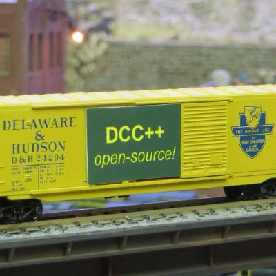

DCC++ Basics
DCC++ is an Open Source / Open Hardware DCC++ control system designed by Gregg Berman.
It is based on the Arduino Open-Source Electronics Platform, and uses an Arduino Motor Shield or Pololu motor driver board to drive the track power. The code is written in C++ and Arduino code, and includes the Base Station code for the Arduino and Controller code that runs on a host computer. JMRI support for DCC++ hardware is available in JMRI version 4.1.5.
Features
- Low cost, Open-Source design
- Outputs for both Main and Programming Tracks
- Control multiple trains
- Supports all NMRA standard DCC Programming and Operations features
- Control DCC Turnouts
- Control Sensors and Outputs connected directly to the Arduino IOs
- Monitor track current
- Automate train operations
- And much, much more...
YouTube Channel
DCC++ is explained thoroughly in a set of YouTube videos on the DCC++ YouTube Channel
Hardware
Core Computer Platform
The DCC++ Base Station is based on the Arduino open-hardware compute platnform. Officially supported models include:
- Arduino UNO
- Arduino MEGA
Other models could be supported with customizations in the code.
Motor Driver
In addition to the Arduino, you need a dual motor driver, either an Arduino Motor Shield (or compatible version) or a Pololu Motor Driver board. The dual motor driver provides power to both the Main and Programming tracks
Power Supply
To power the motor shield, use a power supply between 12-18V DC and with a current capacity (amps) to match your motor driver. The Arduino will require a separate 5V power supply.
Ethernet Shield
The DCC++ Base Station can optionally be connected to a host computer using an Ethernet connection. Either a (wired) Ethernet shield or a WiFi Shield can be used for this connection.
Software
The DCC++ Arduino code and Controller (host computer) code are available on GitHub.
The Controller code is not required if using DCC++ with JMRI.